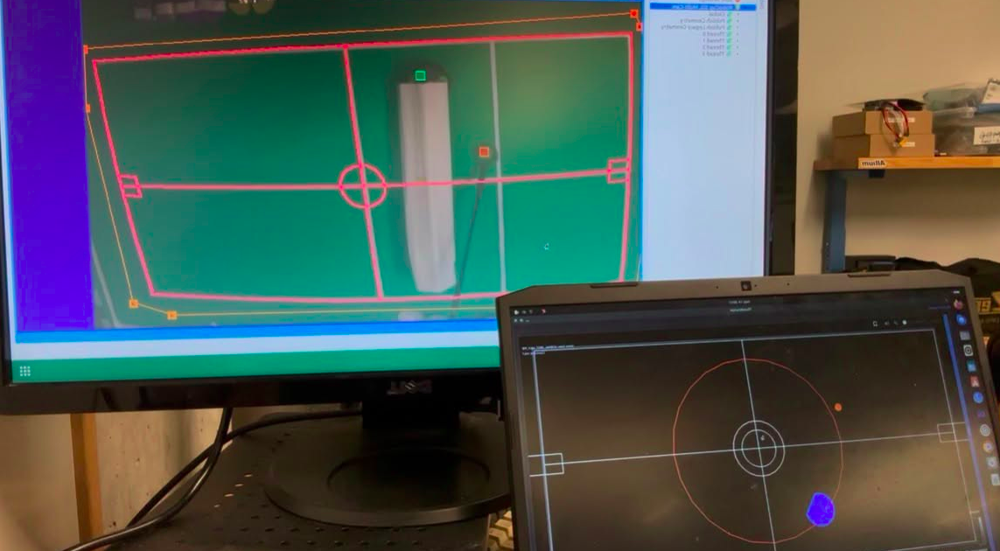
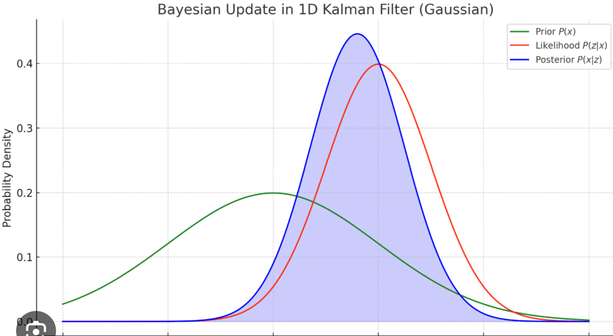

Kalman Filter for Ball Estimation
Estimating ball position under noise, latency and occlusion for a RoboCup SSL team.

Motivation
At Thunderbots we tag tickets by difficulty, from 3 to 13. After half a year on the team I wanted to take on a real challenge, something mathematically backed that improved a system we already rely on. So I picked up the ticket "investigate how to handle ball under occlusion."
Problem
Vision packets carry the ball's position. Three things make them hard to use directly:
- They are noisy. Every measurement carries error.
- They go missing. The network drops packets, or a robot stands between the ball and the camera (occlusion).
- They are late. Packets arrive delayed by roughly 15ms.
The ball itself is unpredictable on top of that. It bounces off walls and can get kicked at any moment, so its motion changes with no warning at all.
So we need something that can predict where the ball is from the data we've got, to cover the latency. Smooth the measurements we've accumulated, to deal with the noise. And stay adaptable enough for the moment the ball bounces or gets kicked.
Before
As vision data comes in we store each measured ball position in a circular buffer. Then we linearly regress what we've got and extrapolate the ball's position to whatever timestamp we want:
where and come from a least-squares fit over the contents of the buffer.
To handle the ball interacting with stuff, the buffer size is dynamic. If a new measurement falls outside a threshold we drop the oldest data in the buffer. If it's inside, we add it.
The result is that an interaction, a bounce or a kick, causes the buffer to shed outdated data until it empties, and we start accumulating from scratch. While data accumulates, the circular buffer smooths it.
My solution
I replaced the buffer and the regression with a Kalman filter. The state is four numbers: position x, position y, velocity x, velocity y. Vision only measures position, so velocity is never observed directly. It just falls out of the model.
Every frame runs in two steps. First predict, using a constant velocity model with damping since a rolling ball slows down:
with . Then update, blending that prediction with the measurement in proportion to how much we trust each one:

The covariance decides the blend. Model uncertainty grows with an acceleration noise of 5.0 m/s squared, and vision gets trusted to about 1 cm. Run a vanilla filter on a ball that's slowing down and the estimate ends up sitting between the two. The model runs ahead because it doesn't know about friction, the measurement lags behind because it's 15ms old.
That's the whole filter for a ball in free flight. It isn't enough on its own though, because a ball on an SSL field spends a lot of its time hitting things. Four heuristics handle the rest.
- Contact. When the ball is touching a robot, a goalpost, a net or a wall, the ballistic model is just wrong, because a kick or a bounce is an impulse vision can't see coming. In contact I widen the covariance back out so the filter defers to the measurement instead of its own extrapolation, and I zero the velocity once contact has held for 5 frames. One frame is not enough to conclude the ball stopped, since a ball bouncing off a wall is in contact for a frame or two and is still moving. The contact test runs against the whole path the ball travelled this frame instead of just where it ended up. At 5 m/s the ball covers over 8 cm between frames at 60 Hz, and a goalpost is thin enough that you'd step straight over it.
- Two gates on every detection. The first is statistical. Mahalanobis distance measures how many standard deviations a measurement is from what the filter expected, and anything past 5 is rejected. The second is physical. I work out how fast the ball would have had to travel to get from the last accepted detection to this one, and reject it if that exceeds 6.0 m/s plus 5 cm of slack. Rejections get counted, and 3 in a row means the estimate itself is probably wrong rather than the packet, so the filter throws away its state and reinitialises on the new measurement.
- Occlusion. When a robot blocks the ball there are no measurements at all. The contact heuristic gets bypassed and the filter coasts on the motion model until packets come back. It's also why the estimate gets pulled back inside the field boundary every frame. A ball can't be outside the wall, so an estimate saying it is is wrong no matter how confident the model is. Without that correction a ball vision loses against a wall will just coast straight through it for as long as it stays hidden.
- Breakbeam. When a robot's breakbeam fires and the ball is in its dribbler, I force the state onto the dribble position with zero velocity. A breakbeam reading can't go in as a normal detection, because the gates above compare against the current estimate and would reject it in exactly the case it exists for: vision has lost the ball and the estimate has drifted away from where the robot says it is.
Demo
The filter on the real setup. Vision output is on the left, the filter's estimate on the right.
Result
I collected frames out of Thunderscope in CI mode with realism enabled, compared sensor fusion output against the simulator's true ball position, and analysed it in MATLAB. Roughly 100k frames for the new filter and 1m for master.
| Slice | Metric | Master | Kalman | Improvement |
|---|---|---|---|---|
| Overall | MSE | 4.785 | 0.162 | 29.5x lower |
| Visible | MSE | 4.872 | 0.154 | 31.7x lower |
| Occluded | MSE | 2.604 | 0.303 | 8.6x lower |
| Overall | Median error | 0.00581 | 0.00512 | 1.13x lower |
The median barely moves. Half-decent frames were always fine on both filters. What changes is the tail:
| Error range | Master | Kalman |
|---|---|---|
| [0, 0.5] nominal | 79.88% | 98.87% |
| (0.5, 1] | 0.98% | 0.22% |
| (1, 2] | 2.45% | 0.32% |
| (2, 3] | 3.25% | 0.14% |
| > 3 catastrophic | 13.44% | 0.44% |
Master put the ball more than 3 metres from where it actually was on 13% of frames. The Kalman filter does it on 0.4%, so 30x fewer. Velocity estimation improved by roughly 3x overall, though master still wins narrowly in the 2 to 3 m/s band.
This is open as PR #3900. It replaces the regression filter outright, so the old ball filter tests don't apply any more and are temporarily disabled. Still to do: occlusion tracking tests, breakbeam unit tests, and testing the breakbeam on a real robot without breaking one.